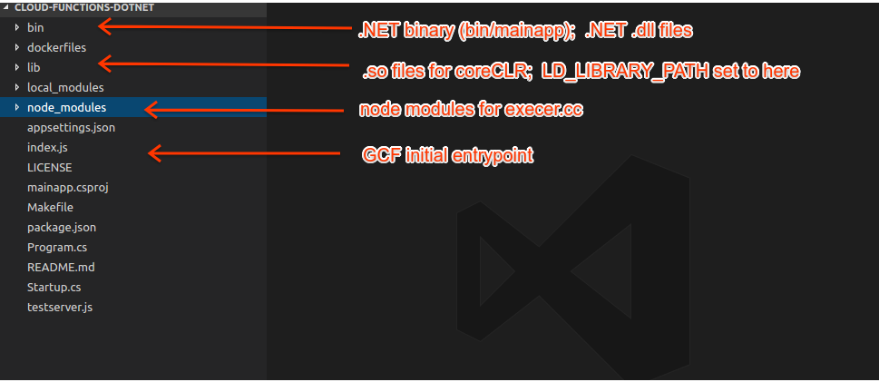

ARTICLES
.NET on Google Cloud Functions
Disclaimer: This is not an official Google product. It is not and will not be maintained by Google, and is not part of Google Cloud Functions project. There is no guarantee of any kind, including that it will work or continue to work, or that it will supported in any way.
This is a sample application running a .NET Cloud Function as an HTTP Trigger. While GCF (Google Cloud Functions) currently only supports NodeJS, there are some techniques you can use to launch different language runtimes and delegate control of the socket to that runtime. This article and code linked from it at the bottom describes one technique to run .NET on GCF.
This is a unofficial port to .NET of cloud-functions-go sample here: - https://github.com/GoogleCloudPlatform/cloud-functions-go
The basic flow of this application initially starts GCF as node application, then delegates control of the listen socket to your target runtime (.NET in this case).
On application startup:
- Initialize NodeJS GCF entrypoint (index.js on port :8080)
- NodeJS launches (gyp add-on cpp binary (execer.cc)
- execer binary scans NodeJS’s socket file descriptors
- execer binary launches .NET binary (bin/mainapp) and passes the listener socket to .NET
- .NET application “takes control” of the listening socket.
- .NET application now receives user-requests directly as a GCF function
Wait…so how are you able to run .NET on GCF without coreCLR installed?
Well, while the full coreCLR isn’t installed, all that is needed to run a simple .NET binary is uploaded during the deployment.
In this case, during build time, the default Dockerfile acquires all the shared_objects (.so) files for .NET, compiles the sample application into a binary for linux, then uploads it.
So, when you stage the build files for deployment, the following folders get generated (all of this is done for you via make!!)

- ~/bin/ contains the the .NET binary to execute and supporting .dll
- ~/lib contains all the .so files required to run coreCLR
- ~/node_modules contains the NodeJS files to launch the intermediate execer.cc add-on module
You can find the full git repo here:
Quickstart: Build+Run with Cloud Shell
This is the easiest way to try this out is with Google Cloud Shell as it already has docker 17+, node and dotnet2.0+
- Enable Cloud Functions API on your project.
- Open up Cloud Shell
Get the repo
git clone https://github.com/salrashid123/cloud-functions-dotnet.gitBuild and stage the files:
cd cloud-functions-dotnet docker build -t docker_tmp . docker cp `docker create docker_tmp`:/user_code/lib . docker cp `docker create docker_tmp`:/user_code/bin . docker cp `docker create docker_tmp`:/user_code/node_modules .Deploy Remember to specify a staging GCS bucket (any bucket you have read-write permissions).
gcloud beta functions deploy gcfdotnet --stage-bucket your_staging_bucket --trigger-httpVerify Deployment by invoking the endpoint URL (this may take sometime to initialize first time ~mins)
curl -v https://us-central1-your_project.cloudfunctions.net/gcfdotnet
Thats it! The following section describes how this works and how to build if you have dotnet locally
This sample uses Docker multi-stage builds compile nodeJS mdoules and dotnet, then finally acquire the requisite linux shared_objects to run on Linux.
Once all those files are ready within the container, the last set of steps ‘copies’ them out of the container so you can deploy the function directly.
Note, if you build the full Default dockerfile, you can execute the container since the build step includes this by default:
docker run -p 8080:8080 -t docker_tmp
Writing a cloud function
You need to have dotnet 2.0 available:
Edit Startup.cs file to add on your HTTP Trigger function here.:
Startup.cs
private static void Execute(IApplicationBuilder app)
{
app.Run(async context =>
{
_logger.LogInformation("HTTP handler called..");
await context.Response.WriteAsync("hello from .NET");
});
}
At this point, you can build and deploy with docker as above.
Building dotnet bin/ folder locally
If you have dotnet2.0 installed locally, you can build and run it locally to to test
dotnet restore -r ubuntu.14.04-x64
dotnet publish -c Release -r ubuntu.14.04-x64 -o bin/
then set the permissions before deploying and executing:
chmod u+x bin/mainapp
bin/mainapp
The entrypoint for your cloud funtion must be ‘/execute’
http://localhost:8080/execute
Note that if you wish to develop locally and have dotnet installed, you can modify the default Docker file to not build the dotnet binary:
FROM node:8.9.1 AS build-env-node
ADD . /user_code
WORKDIR /user_code
RUN npm install --save local_modules/execer
FROM microsoft/dotnet:2.0.0-sdk AS build-env-dotnet
ADD . /user_code
WORKDIR /user_code
RUN mkdir -p /user_code/lib && \
for i in `dpkg -L libc6 libcurl3 libgcc1 libgssapi-krb5-2 libicu57 liblttng-ust0 libssl1.0.2 libstdc++6 libunwind8 libuuid1 zlib1g | egrep "^/usr/lib/x86_64-linux-gnu/.*\.so\."`; do cp $i /user_code/lib; done
FROM gcr.io/distroless/dotnet
WORKDIR /user_code
ADD . /user_code
COPY --from=build-env-node /user_code/node_modules /user_code/node_modules
COPY --from=build-env-dotnet /user_code/lib /user_code/lib
but build the other components with docker:
docker build -t docker_tmp .
docker cp `docker create docker_tmp`:/user_code/lib .
docker cp `docker create docker_tmp`:/user_code/node_modules .
After that, build dotnet locally
dotnet restore -r ubuntu.14.04-x64
dotnet publish -c Release -r ubuntu.14.04-x64 -o bin/
chmod u+x bin/mainapp
Then just deploy as shown above
Appendix
Required libraries for dotnet
- dotnet runtime requires the following libraries. You can use this to install runtime support on debian without the full dotnet install microsoft/dotnet:2.0.0-runtime-jessie
Essentially this is a copy of the required minimum set needed for dotnet to run on the OS wihtout extras. For more information on this, see distroless builds
How this application works
The following snippets and links describes how control transfer for the socket file descriptors takes place from
node -> cpp -> .NET
Acquire the file descriptors here by modifying the following to pass in LD_LIBRARY_PATH environment variables:
change to:
const char bin[] = "./bin/mainapp";
char *envp[] =
{
"LD_LIBRARY_PATH=/user_code/lib:$LD_LIBRARY_PATH",
NULL
};
execve(bin, const_cast<char* const*>(&args[0]), envp);
Then in .NET, use the following Kestrel Options to listen on a handler.
Program.cs
.UseKestrel(options =>
{
try
{
for (int i = 0; i < args.Length; i++)
{
string value = args[i];
if (value == "--fds")
{
var fds = args[i+1].Split(",")[0];
string env_var = Environment.GetEnvironmentVariable("LD_LIBRARY_PATH");
logger.LogDebug("Using LD_LIBRARY_PATH: " + env_var);
logger.LogDebug("Setting kestrel ListenHandler to fd >>>>>>>> " + fds);
ulong fd = Convert.ToUInt64(fds);
options.ListenHandle(fd);
break;
}
}
}
catch (System.IndexOutOfRangeException e)
{
logger.LogError("Provided filedescriptor argument but unable to parse descriptor list " + e);
}
catch (Exception ex) {
logger.LogCritical(ex.Message);
}